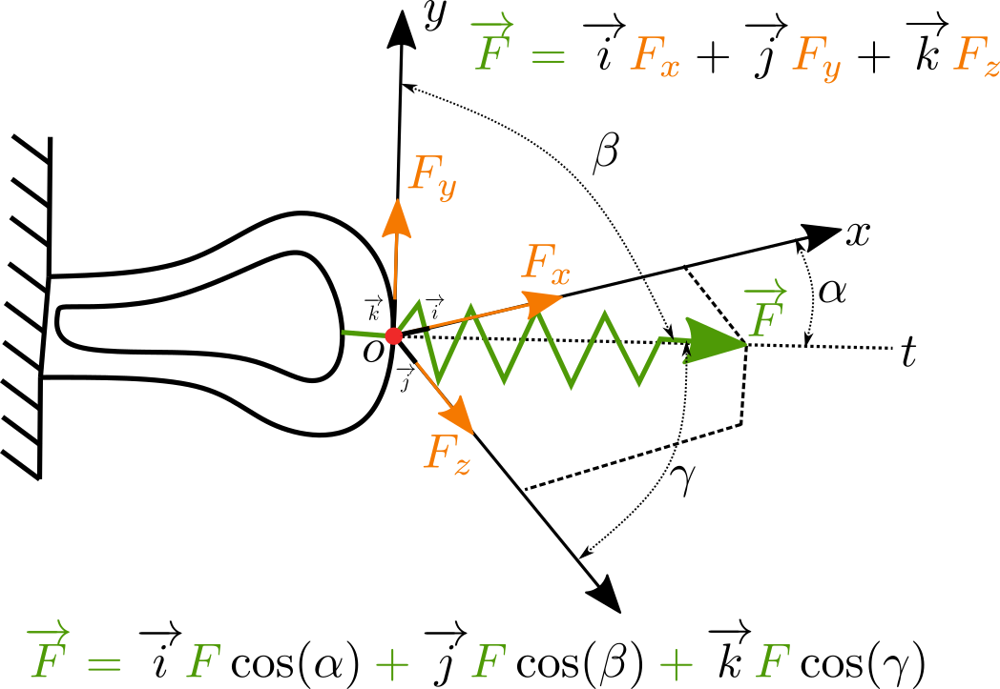
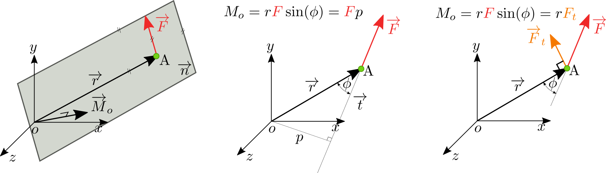
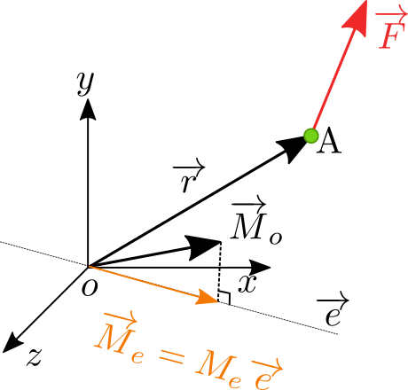
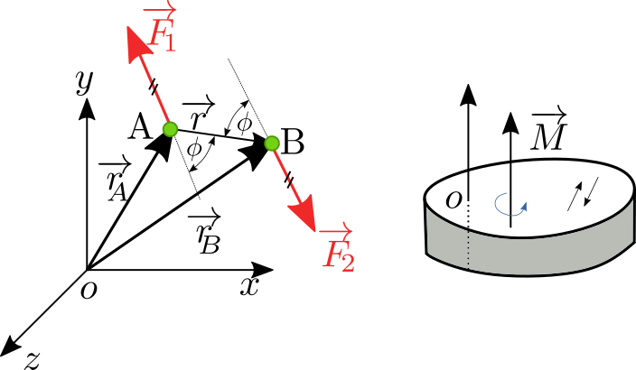

Účinky síly (☕)¶
Koncept síly¶
Síla je projevem interakce dvou těles nebo působení setrvačných a gravitačních účinků na těleso. Sílu rozdělíme na:
statickou: nemění pohybový stav tělesa, tj. všechny síly jsou v rovnováze
dynamicou: změna pohybového stavu tělese, vyjádřitelnou 2 Newtonovým zákonem:
Zaveďme vhodný matematický popis. Uvažujme sílu jako vektor v kártézských souřadnicích:

Sílu můžeme rozložit do směru souřadnic na složky (tohoto rozkladu budeme dále hojně využívat). Velikost vektoru pak lze snadno spočítat:
Síla je orientovaný vektor, leží na přímce a prochází bodem (nebo působištěm).
Rozdělení silového působení¶
Silové působení můžeme rozdělit tři kategorie:

Liniové zatížení (obrázek vlevo) si lze představit jako zatížení přes hranu. Celková síla od liniového zatížení je pak dána jako integrál přes funkci zatížení \(\overrightarrow{q}\):
Podobně platí i pro výpočet síly, která je dána plošnou intenzitou \(\overrightarrow{p}\):
A nakonec objemové síly, dané například gravitací lze formulovat:
Otáčivé účinky síly¶
Definujme nejdříve sílu \(\overrightarrow{F}\) a její složky \(\{F_x, F_y, F_z\}\) a stejně tak rameno \(\overrightarrow{r}\) a jeho složky \(\{x_r, y_r, z_r\}\). Síla na \(\overrightarrow{F}\) na rameni \(\overrightarrow{r}\) způsobí otáčivý účinek k bodu \(o\) souřadnicového systému, \(\overrightarrow{M}_{o}\)

Moment \(\overrightarrow{M}_o\) je vektor, který je kolmý na \(\overrightarrow{r}\) a sílu \(\overrightarrow{F}\) a proto je dán vektorovým součinem
Nutno podotknout, že vektorový součin \(\times\) není komutativní a tedy záleží na pořádí násobení členů! Po rozepsání vektorového součinu vidíme
Vhodným zpřeházením pořadí členů, lze získat zápis, který ukazuje, že moment \(\overrightarrow{M}_o\) lze zapsat jako součet dílčích momentů složek síly
Otáčové účinky síly k ose¶
Dalším případem je stanovení otáčivého momentu \(\overrightarrow{M}_e\) k přímce, popsané směrovým vektorem \(\overrightarrow{e}\)

Moment k ose \(\overrightarrow{e}\) je vlastně projekcí \(\overrightarrow{M}_o\) do přímky \(\overrightarrow{e}\). Jinými slovy, tuto projekci snadno spočítáme pomocí skalárního součinu
Moment silové dvojice¶
Uvažujme případ dvou sil \(\overrightarrow{F}_1 = \overrightarrow{F}\) a \(\overrightarrow{F}_2=-\overrightarrow{F}\). Podle obrázku platí

že vásledný moment \(\overrightarrow{M}_o\) k počátku \(o\) je
Výsledný moment \(M_o\) je stejný po celém tělese, tedy je stejný k libovolnému bodu, protože